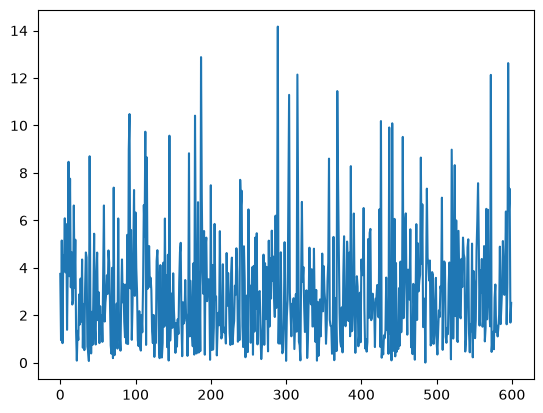
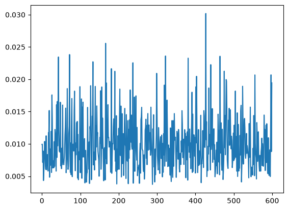
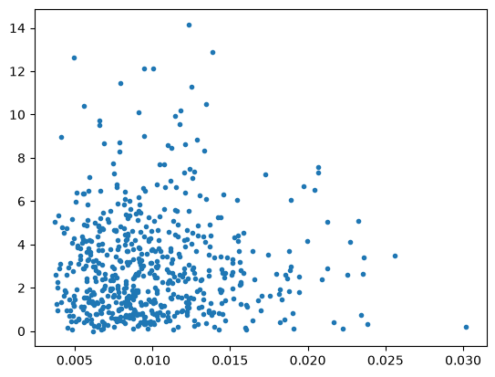

Multivariate Linear Model - MultivariateLS#
This notebooks illustrates some features for the multivariate linear model estimated by least squares. The example is based on the UCLA stats example in https://stats.oarc.ucla.edu/stata/dae/multivariate-regression-analysis/ .
The model assumes that a multivariate dependent variable depends linearly on the same set of explanatory variables.
Y = X * B + u
where
the dependent variable (endog)
Yhas shape (nobs, k_endog),the matrix of explanatory variables including constant (exog)
Xhas shape (nobs, k_exog), andthe parameter matrix
Bhas shape (k_exog, k_endog), i.e. coefficients for explanatory variables in rows and dependent variables in columns.the disturbance term
uhas the same shape asY, (nobs, k_endog), and is assumed to have mean zero and to be uncorrelated with the exogX.
Estimation is by least squares. The parameter estimates with common explanatory variables for each dependent variables corresponds to separate OLS estimates for each endog. The main advantage of the multivariate model is that we can make inference
[1]:
import os
import numpy as np
import pandas as pd
from statsmodels.base.model import LikelihoodModel
from statsmodels.regression.linear_model import OLS
from statsmodels.multivariate.manova import MANOVA
from statsmodels.multivariate.multivariate_ols import MultivariateLS
import statsmodels.multivariate.tests.results as path
dir_path = os.path.dirname(os.path.abspath(path.__file__))
csv_path = os.path.join(dir_path, "mvreg.csv")
data_mvreg = pd.read_csv(csv_path)
[2]:
data_mvreg.head()
[2]:
| locus_of_control | self_concept | motivation | read | write | science | prog | |
|---|---|---|---|---|---|---|---|
| 0 | -1.143955 | 0.722641 | 0.368973 | 37.405548 | 39.032845 | 33.532822 | academic |
| 1 | 0.504134 | 0.111364 | 0.520319 | 52.760784 | 51.995041 | 65.225044 | academic |
| 2 | 1.628546 | 0.629934 | 0.436838 | 59.771915 | 54.651653 | 64.604500 | academic |
| 3 | 0.368096 | -0.138528 | -0.004324 | 42.854324 | 41.121357 | 48.493809 | vocational |
| 4 | -0.280190 | -0.452226 | 1.256924 | 54.756279 | 49.947208 | 50.381657 | academic |
[3]:
formula = "locus_of_control + self_concept + motivation ~ read + write + science + prog"
mod = MultivariateLS.from_formula(formula, data=data_mvreg)
res = mod.fit()
Multivariate hypothesis tests mv_test#
mv_test method by default performs the hypothesis tests that each term in the formula has no effect on any of the dependent variables (endog). This is the same as the MANOVA test.Consequently, using mv_test in MultivariateLS and in MANOVA produces the same results. However. MANOVA only provides the hypothesis tests as feature, while MultivariateLS provide the usual model results.
More general versions of the mv_test are for hypothesis in the form L B M = C. Here L are restrictions corresponding to explanatory variables, M are restrictions corresponding to dependent (endog) variables and C is a matrix of constants for affine restrictions. See docstrings for details.
[4]:
mvt = res.mv_test()
mvt.summary_frame
[4]:
| Value | Num DF | Den DF | F Value | Pr > F | ||
|---|---|---|---|---|---|---|
| Effect | Statistic | |||||
| Intercept | Wilks' lambda | 0.848467 | 3 | 592.0 | 35.242876 | 0.0 |
| Pillai's trace | 0.151533 | 3.0 | 592.0 | 35.242876 | 0.0 | |
| Hotelling-Lawley trace | 0.178596 | 3 | 592.0 | 35.242876 | 0.0 | |
| Roy's greatest root | 0.178596 | 3 | 592 | 35.242876 | 0.0 | |
| prog | Wilks' lambda | 0.891438 | 6 | 1184.0 | 11.670765 | 0.0 |
| Pillai's trace | 0.108649 | 6.0 | 1186.0 | 11.354963 | 0.0 | |
| Hotelling-Lawley trace | 0.121685 | 6 | 787.558061 | 11.996155 | 0.0 | |
| Roy's greatest root | 0.120878 | 3 | 593 | 23.893456 | 0.0 | |
| read | Wilks' lambda | 0.976425 | 3 | 592.0 | 4.764416 | 0.002727 |
| Pillai's trace | 0.023575 | 3.0 | 592.0 | 4.764416 | 0.002727 | |
| Hotelling-Lawley trace | 0.024144 | 3 | 592.0 | 4.764416 | 0.002727 | |
| Roy's greatest root | 0.024144 | 3 | 592 | 4.764416 | 0.002727 | |
| write | Wilks' lambda | 0.947394 | 3 | 592.0 | 10.957338 | 0.000001 |
| Pillai's trace | 0.052606 | 3.0 | 592.0 | 10.957338 | 0.000001 | |
| Hotelling-Lawley trace | 0.055527 | 3 | 592.0 | 10.957338 | 0.000001 | |
| Roy's greatest root | 0.055527 | 3 | 592 | 10.957338 | 0.000001 | |
| science | Wilks' lambda | 0.983405 | 3 | 592.0 | 3.329911 | 0.019305 |
| Pillai's trace | 0.016595 | 3.0 | 592.0 | 3.329911 | 0.019305 | |
| Hotelling-Lawley trace | 0.016875 | 3 | 592.0 | 3.329911 | 0.019305 | |
| Roy's greatest root | 0.016875 | 3 | 592 | 3.329911 | 0.019305 |
[5]:
manova = MANOVA.from_formula(formula, data=data_mvreg)
manova.mv_test().summary_frame
[5]:
| Value | Num DF | Den DF | F Value | Pr > F | ||
|---|---|---|---|---|---|---|
| Effect | Statistic | |||||
| Intercept | Wilks' lambda | 0.848467 | 3 | 592.0 | 35.242876 | 0.0 |
| Pillai's trace | 0.151533 | 3.0 | 592.0 | 35.242876 | 0.0 | |
| Hotelling-Lawley trace | 0.178596 | 3 | 592.0 | 35.242876 | 0.0 | |
| Roy's greatest root | 0.178596 | 3 | 592 | 35.242876 | 0.0 | |
| prog | Wilks' lambda | 0.891438 | 6 | 1184.0 | 11.670765 | 0.0 |
| Pillai's trace | 0.108649 | 6.0 | 1186.0 | 11.354963 | 0.0 | |
| Hotelling-Lawley trace | 0.121685 | 6 | 787.558061 | 11.996155 | 0.0 | |
| Roy's greatest root | 0.120878 | 3 | 593 | 23.893456 | 0.0 | |
| read | Wilks' lambda | 0.976425 | 3 | 592.0 | 4.764416 | 0.002727 |
| Pillai's trace | 0.023575 | 3.0 | 592.0 | 4.764416 | 0.002727 | |
| Hotelling-Lawley trace | 0.024144 | 3 | 592.0 | 4.764416 | 0.002727 | |
| Roy's greatest root | 0.024144 | 3 | 592 | 4.764416 | 0.002727 | |
| write | Wilks' lambda | 0.947394 | 3 | 592.0 | 10.957338 | 0.000001 |
| Pillai's trace | 0.052606 | 3.0 | 592.0 | 10.957338 | 0.000001 | |
| Hotelling-Lawley trace | 0.055527 | 3 | 592.0 | 10.957338 | 0.000001 | |
| Roy's greatest root | 0.055527 | 3 | 592 | 10.957338 | 0.000001 | |
| science | Wilks' lambda | 0.983405 | 3 | 592.0 | 3.329911 | 0.019305 |
| Pillai's trace | 0.016595 | 3.0 | 592.0 | 3.329911 | 0.019305 | |
| Hotelling-Lawley trace | 0.016875 | 3 | 592.0 | 3.329911 | 0.019305 | |
| Roy's greatest root | 0.016875 | 3 | 592 | 3.329911 | 0.019305 |
The core multivariate regression results are displayed by the summary method.
[6]:
print(res.summary())
MultivariateLS Regression Results
==============================================================================================================
Dep. Variable: ['locus_of_control', 'self_concept', 'motivation'] No. Observations: 600
Model: MultivariateLS Df Residuals: 594
Method: Least Squares Df Model: 15
Date: Tue, 30 Jun 2026
Time: 15:52:58
======================================================================================
locus_of_control coef std err t P>|t| [0.025 0.975]
--------------------------------------------------------------------------------------
Intercept -1.4970 0.157 -9.505 0.000 -1.806 -1.188
prog[T.general] -0.1278 0.064 -1.998 0.046 -0.253 -0.002
prog[T.vocational] 0.1239 0.058 2.150 0.032 0.011 0.237
read 0.0125 0.004 3.363 0.001 0.005 0.020
write 0.0121 0.003 3.581 0.000 0.005 0.019
science 0.0058 0.004 1.582 0.114 -0.001 0.013
--------------------------------------------------------------------------------------
self_concept coef std err t P>|t| [0.025 0.975]
--------------------------------------------------------------------------------------
Intercept -0.0959 0.179 -0.536 0.592 -0.447 0.255
prog[T.general] -0.2765 0.073 -3.808 0.000 -0.419 -0.134
prog[T.vocational] 0.1469 0.065 2.246 0.025 0.018 0.275
read 0.0013 0.004 0.310 0.757 -0.007 0.010
write -0.0043 0.004 -1.115 0.265 -0.012 0.003
science 0.0053 0.004 1.284 0.200 -0.003 0.013
--------------------------------------------------------------------------------------
motivation coef std err t P>|t| [0.025 0.975]
--------------------------------------------------------------------------------------
Intercept -0.9505 0.198 -4.811 0.000 -1.339 -0.563
prog[T.general] -0.3603 0.080 -4.492 0.000 -0.518 -0.203
prog[T.vocational] 0.2594 0.072 3.589 0.000 0.117 0.401
read 0.0097 0.005 2.074 0.038 0.001 0.019
write 0.0175 0.004 4.122 0.000 0.009 0.026
science -0.0090 0.005 -1.971 0.049 -0.018 -3.13e-05
======================================================================================
The the standard results attributes for the parameter estimates like params, bse, tvalues and pvalues, are two dimensional arrays or dataframes with explanatory variables (exog) in rows and dependend (endog) variables in columns.
[7]:
res.params
[7]:
| 0 | 1 | 2 | |
|---|---|---|---|
| Intercept | -1.496970 | -0.095858 | -0.950513 |
| prog[T.general] | -0.127795 | -0.276483 | -0.360329 |
| prog[T.vocational] | 0.123875 | 0.146876 | 0.259367 |
| read | 0.012505 | 0.001308 | 0.009674 |
| write | 0.012145 | -0.004293 | 0.017535 |
| science | 0.005761 | 0.005306 | -0.009001 |
[8]:
res.bse
[8]:
| 0 | 1 | 2 | |
|---|---|---|---|
| Intercept | 0.157499 | 0.178794 | 0.197563 |
| prog[T.general] | 0.063955 | 0.072602 | 0.080224 |
| prog[T.vocational] | 0.057607 | 0.065396 | 0.072261 |
| read | 0.003718 | 0.004220 | 0.004664 |
| write | 0.003391 | 0.003850 | 0.004254 |
| science | 0.003641 | 0.004133 | 0.004567 |
[9]:
res.pvalues
[9]:
| 0 | 1 | 2 | |
|---|---|---|---|
| Intercept | 4.887129e-20 | 0.592066 | 0.000002 |
| prog[T.general] | 4.615006e-02 | 0.000155 | 0.000008 |
| prog[T.vocational] | 3.193055e-02 | 0.025075 | 0.000359 |
| read | 8.192738e-04 | 0.756801 | 0.038481 |
| write | 3.700449e-04 | 0.265214 | 0.000043 |
| science | 1.141093e-01 | 0.199765 | 0.049209 |
General MV and Wald tests#
The multivariate linear model allows for multivariate test in the L B M form as well as standard wald tests on linear combination of parameters.
The multivariate tests are based on eigenvalues or trace of the matrices. Wald tests are standard test base on the flattened (stacked) parameter array and their covariance, hypothesis are of the form R b = c where b is the column stacked parameter array. The tests are asymptotically equivalent under the model assumptions but differ in small samples.
The linear restriction can be defined either as hypothesis matrices (numpy arrays) or as strings or list of strings.
[10]:
yn = res.model.endog_names
xn = res.model.exog_names
yn, xn
[10]:
(['locus_of_control', 'self_concept', 'motivation'],
['Intercept',
'prog[T.general]',
'prog[T.vocational]',
'read',
'write',
'science'])
[11]:
# test for an individual coefficient
mvt = res.mv_test(hypotheses=[("coef", ["science"], ["locus_of_control"])])
mvt.summary_frame
[11]:
| Value | Num DF | Den DF | F Value | Pr > F | ||
|---|---|---|---|---|---|---|
| Effect | Statistic | |||||
| coef | Wilks' lambda | 0.995803 | 1 | 594.0 | 2.50373 | 0.114109 |
| Pillai's trace | 0.004197 | 1.0 | 594.0 | 2.50373 | 0.114109 | |
| Hotelling-Lawley trace | 0.004215 | 1 | 594.0 | 2.50373 | 0.114109 | |
| Roy's greatest root | 0.004215 | 1 | 594 | 2.50373 | 0.114109 |
[12]:
tt = res.t_test("ylocus_of_control_science")
tt, tt.pvalue
[12]:
(<class 'statsmodels.stats.contrast.ContrastResults'>
Test for Constraints
==============================================================================
coef std err t P>|t| [0.025 0.975]
------------------------------------------------------------------------------
c0 0.0058 0.004 1.582 0.114 -0.001 0.013
==============================================================================,
array(0.11410929))
We can use either mv_test or wald_test for the joint hypothesis that an explanatory variable has no effect on any of the dependent variables, that is all coefficient for the explanatory variable are zero.
In this example, the pvalues agree at 3 decimals.
[13]:
wt = res.wald_test(
["ylocus_of_control_science", "yself_concept_science", "ymotivation_science"],
scalar=True,
)
wt
[13]:
<class 'statsmodels.stats.contrast.ContrastResults'>
<F test: F=3.3411603250015216, p=0.019011634301736215, df_denom=594, df_num=3>
[14]:
mvt = res.mv_test(hypotheses=[("science", ["science"], yn)])
mvt.summary_frame
[14]:
| Value | Num DF | Den DF | F Value | Pr > F | ||
|---|---|---|---|---|---|---|
| Effect | Statistic | |||||
| science | Wilks' lambda | 0.983405 | 3 | 592.0 | 3.329911 | 0.019305 |
| Pillai's trace | 0.016595 | 3.0 | 592.0 | 3.329911 | 0.019305 | |
| Hotelling-Lawley trace | 0.016875 | 3 | 592.0 | 3.329911 | 0.019305 | |
| Roy's greatest root | 0.016875 | 3 | 592 | 3.329911 | 0.019305 |
[15]:
# t_test provides a vectorized results for each of the simple hypotheses
tt = res.t_test(
["ylocus_of_control_science", "yself_concept_science", "ymotivation_science"]
)
tt, tt.pvalue
[15]:
(<class 'statsmodels.stats.contrast.ContrastResults'>
Test for Constraints
==============================================================================
coef std err t P>|t| [0.025 0.975]
------------------------------------------------------------------------------
c0 0.0058 0.004 1.582 0.114 -0.001 0.013
c1 0.0053 0.004 1.284 0.200 -0.003 0.013
c2 -0.0090 0.005 -1.971 0.049 -0.018 -3.13e-05
==============================================================================,
array([0.11410929, 0.19976543, 0.0492095 ]))
Warning: the naming pattern for the flattened parameter names used in t_test and wald_test might still change.
The current pattern is "y{endog_name}_{exog_name}".
examples:
[16]:
[f"y{endog_name}_{exog_name}" for endog_name in yn for exog_name in ["science"]]
[16]:
['ylocus_of_control_science', 'yself_concept_science', 'ymotivation_science']
[17]:
c = [
f"y{endog_name}_{exog_name}"
for endog_name in yn
for exog_name in ["prog[T.general]", "prog[T.vocational]"]
]
c
[17]:
['ylocus_of_control_prog[T.general]',
'ylocus_of_control_prog[T.vocational]',
'yself_concept_prog[T.general]',
'yself_concept_prog[T.vocational]',
'ymotivation_prog[T.general]',
'ymotivation_prog[T.vocational]']
The previous restriction corresponds to the MANOVA type test that the categorical variable “prog” has no effect.
[18]:
mant = manova.mv_test().summary_frame
mant.loc["prog"] # ["Pr > F"].to_numpy()
[18]:
| Value | Num DF | Den DF | F Value | Pr > F | |
|---|---|---|---|---|---|
| Statistic | |||||
| Wilks' lambda | 0.891438 | 6 | 1184.0 | 11.670765 | 0.0 |
| Pillai's trace | 0.108649 | 6.0 | 1186.0 | 11.354963 | 0.0 |
| Hotelling-Lawley trace | 0.121685 | 6 | 787.558061 | 11.996155 | 0.0 |
| Roy's greatest root | 0.120878 | 3 | 593 | 23.893456 | 0.0 |
[19]:
res.wald_test(c, scalar=True)
[19]:
<class 'statsmodels.stats.contrast.ContrastResults'>
<F test: F=12.046814522691747, p=8.548081236477521e-13, df_denom=594, df_num=6>
Note: The degrees of freedom differ across hypothesis test methods. The model can be considered as a multivariate model with nobs=600 in this case, or as a stacked model with nobs_total = nobs * k_endog = 1800.
For within endog restriction, inference is based on the same covariance of the parameter estimates in MultivariateLS and OLS. The degrees of freedom in a single output OLS are df_resid = 600 - 6 = 594. Using the same degrees of freedom in MultivariateLS preserves the equivalence for the analysis of each endog. Using the total df_resid for hypothesis tests would make them more liberal.
Asymptotic inference based on normal and chisquare distribution (use_t=False) is not affected by how df_resid are defined.
It is not yet decided whether there will be additional options to choose different degrees of freedom in the Wald tests.
[20]:
res.df_resid
[20]:
594
Both mv_test and wald_test can be used to test hypothesis on contrasts between coefficients
[21]:
c = [
f"y{endog_name}_prog[T.general] - y{endog_name}_prog[T.vocational]"
for endog_name in yn
]
c
[21]:
['ylocus_of_control_prog[T.general] - ylocus_of_control_prog[T.vocational]',
'yself_concept_prog[T.general] - yself_concept_prog[T.vocational]',
'ymotivation_prog[T.general] - ymotivation_prog[T.vocational]']
[22]:
res.wald_test(c, scalar=True)
[22]:
<class 'statsmodels.stats.contrast.ContrastResults'>
<F test: F=23.929409268979654, p=1.2456536486105198e-14, df_denom=594, df_num=3>
[23]:
mvt = res.mv_test(
hypotheses=[("diff_prog", ["prog[T.general] - prog[T.vocational]"], yn)]
)
mvt.summary_frame
[23]:
| Value | Num DF | Den DF | F Value | Pr > F | ||
|---|---|---|---|---|---|---|
| Effect | Statistic | |||||
| diff_prog | Wilks' lambda | 0.892176 | 3 | 592.0 | 23.848839 | 0.0 |
| Pillai's trace | 0.107824 | 3.0 | 592.0 | 23.848839 | 0.0 | |
| Hotelling-Lawley trace | 0.120856 | 3 | 592.0 | 23.848839 | 0.0 | |
| Roy's greatest root | 0.120856 | 3 | 592 | 23.848839 | 0.0 |
Example: hypothesis that coefficients are the same across endog equations.
We can test that the difference between the parameters of the later two equation with the first equation are zero.
[24]:
mvt = res.mv_test(
hypotheses=[
(
"diff_prog",
xn,
["self_concept - locus_of_control", "motivation - locus_of_control"],
)
]
)
mvt.summary_frame
[24]:
| Value | Num DF | Den DF | F Value | Pr > F | ||
|---|---|---|---|---|---|---|
| Effect | Statistic | |||||
| diff_prog | Wilks' lambda | 0.867039 | 12 | 1186.0 | 7.307879 | 0.0 |
| Pillai's trace | 0.13714 | 12.0 | 1188.0 | 7.28819 | 0.0 | |
| Hotelling-Lawley trace | 0.14853 | 12 | 919.36321 | 7.331042 | 0.0 | |
| Roy's greatest root | 0.100625 | 6 | 594 | 9.961898 | 0.0 |
In a similar hypothesis test, we can test that equation have the same slope coefficients but can have different constants.
[25]:
xn[1:]
[25]:
['prog[T.general]', 'prog[T.vocational]', 'read', 'write', 'science']
[26]:
mvt = res.mv_test(
hypotheses=[
(
"diff_prog",
xn[1:],
["self_concept - locus_of_control", "motivation - locus_of_control"],
)
]
)
mvt.summary_frame
[26]:
| Value | Num DF | Den DF | F Value | Pr > F | ||
|---|---|---|---|---|---|---|
| Effect | Statistic | |||||
| diff_prog | Wilks' lambda | 0.879133 | 10 | 1186.0 | 7.890322 | 0.0 |
| Pillai's trace | 0.124212 | 10.0 | 1188.0 | 7.866738 | 0.0 | |
| Hotelling-Lawley trace | 0.133679 | 10 | 886.75443 | 7.918284 | 0.0 | |
| Roy's greatest root | 0.092581 | 5 | 594 | 10.998679 | 0.0 |
Prediction#
The regression model and its results instance have methods for prediction and residuals.
Note, because the parameter estimates are the same as in the OLS estimate for individual endog, the predictions will also be the same between the MultivariateLS model and the set of individual OLS models.
[27]:
res.resid
[27]:
| locus_of_control | self_concept | motivation | |
|---|---|---|---|
| 0 | -0.781981 | 0.759249 | 0.575027 |
| 1 | 0.334075 | 0.015388 | 0.635811 |
| 2 | 1.342126 | 0.539488 | 0.432337 |
| 3 | 0.426497 | -0.326337 | -0.012298 |
| 4 | -0.364810 | -0.480846 | 1.255411 |
| ... | ... | ... | ... |
| 595 | -1.849566 | 0.920851 | -0.318799 |
| 596 | -1.278212 | -1.080592 | -0.031575 |
| 597 | -1.060668 | -1.065596 | -1.577958 |
| 598 | -0.661946 | 0.368192 | 0.132774 |
| 599 | -0.129760 | 0.702698 | 1.020835 |
600 rows × 3 columns
[28]:
res.predict()
[28]:
array([[-0.36197321, -0.03660735, -0.2060539 ],
[ 0.17005867, 0.09597616, -0.11549243],
[ 0.28641963, 0.09044546, 0.00450077],
...,
[ 0.6252098 , -0.23716973, 0.11864199],
[-0.3024846 , -0.29586741, -0.47584179],
[ 0.77574136, 0.2878978 , 0.42480766]], shape=(600, 3))
[29]:
res.predict(data_mvreg)
[29]:
| 0 | 1 | 2 | |
|---|---|---|---|
| 0 | -0.361973 | -0.036607 | -0.206054 |
| 1 | 0.170059 | 0.095976 | -0.115492 |
| 2 | 0.286420 | 0.090445 | 0.004501 |
| 3 | -0.058400 | 0.187809 | 0.007974 |
| 4 | 0.084621 | 0.028620 | 0.001513 |
| ... | ... | ... | ... |
| 595 | 0.185458 | 0.036897 | 0.034498 |
| 596 | 0.330408 | 0.097329 | 0.489407 |
| 597 | 0.625210 | -0.237170 | 0.118642 |
| 598 | -0.302485 | -0.295867 | -0.475842 |
| 599 | 0.775741 | 0.287898 | 0.424808 |
600 rows × 3 columns
[30]:
res.fittedvalues
[30]:
| locus_of_control | self_concept | motivation | |
|---|---|---|---|
| 0 | -0.361973 | -0.036607 | -0.206054 |
| 1 | 0.170059 | 0.095976 | -0.115492 |
| 2 | 0.286420 | 0.090445 | 0.004501 |
| 3 | -0.058400 | 0.187809 | 0.007974 |
| 4 | 0.084621 | 0.028620 | 0.001513 |
| ... | ... | ... | ... |
| 595 | 0.185458 | 0.036897 | 0.034498 |
| 596 | 0.330408 | 0.097329 | 0.489407 |
| 597 | 0.625210 | -0.237170 | 0.118642 |
| 598 | -0.302485 | -0.295867 | -0.475842 |
| 599 | 0.775741 | 0.287898 | 0.424808 |
600 rows × 3 columns
The predict methods can take user provided data for the explanatory variables, but currently are not able to automatically create sets of explanatory variables for interesting effects.
In the following, we construct at dataframe that we can use to predict the conditional expectation of the dependent variables for each level of the categorical variable “prog” at the sample means of the continuous variables.
[31]:
data_exog = data_mvreg[["read", "write", "science", "prog"]]
ex = pd.DataFrame(data_exog["prog"].unique(), columns=["prog"])
mean_ex = data_mvreg[["read", "write", "science"]].mean()
ex.loc[:, ["read", "write", "science"]] = mean_ex.values
ex
[31]:
| prog | read | write | science | |
|---|---|---|---|---|
| 0 | academic | 51.901833 | 52.384833 | 51.763333 |
| 1 | vocational | 51.901833 | 52.384833 | 51.763333 |
| 2 | general | 51.901833 | 52.384833 | 51.763333 |
[32]:
pred = res.predict(ex)
pred.index = ex["prog"]
pred.columns = res.fittedvalues.columns
print("predicted mean by 'prog':")
pred
predicted mean by 'prog':
[32]:
| locus_of_control | self_concept | motivation | |
|---|---|---|---|
| prog | |||
| academic | 0.086493 | 0.021752 | 0.004209 |
| vocational | 0.210368 | 0.168628 | 0.263575 |
| general | -0.041303 | -0.254731 | -0.356121 |
Outlier-Influence#
resid_distance is a one dimensional residual measure based on Mahalanobis distance for each sample observation. The hat matrix in the MultivariateLS model is the same as in OLS, the diagonal of the hat matrix is temporarily attached as results._hat_matrix_diag.Note, individual components of the multivariate dependent variable can be analyzed with OLS and are available in the corresponding post-estimation methods like OLSInfluence.
[33]:
res.resid_distance[:5]
[33]:
array([3.74332128, 0.95395412, 5.15221877, 0.82580531, 4.5260778 ])
[34]:
res.cov_resid
[34]:
array([[0.36844484, 0.05748939, 0.06050103],
[0.05748939, 0.4748153 , 0.13103368],
[0.06050103, 0.13103368, 0.57973305]])
[35]:
import matplotlib.pyplot as plt
[36]:
plt.plot(res.resid_distance)
[36]:
[<matplotlib.lines.Line2D at 0x7fdf421a12b0>]

[37]:
plt.plot(res._hat_matrix_diag)
[37]:
[<matplotlib.lines.Line2D at 0x7fdf42207380>]

[38]:
plt.plot(res._hat_matrix_diag, res.resid_distance, ".")
[38]:
[<matplotlib.lines.Line2D at 0x7fdf420441a0>]
